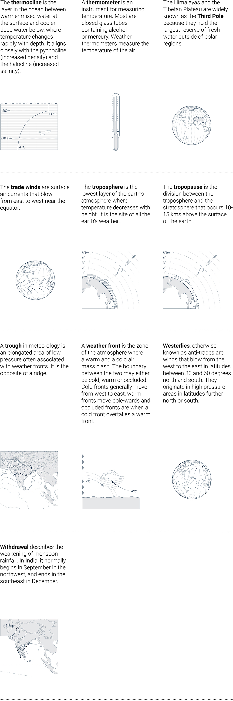
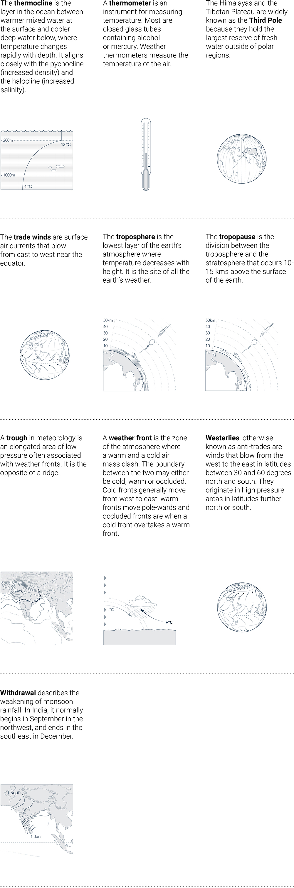
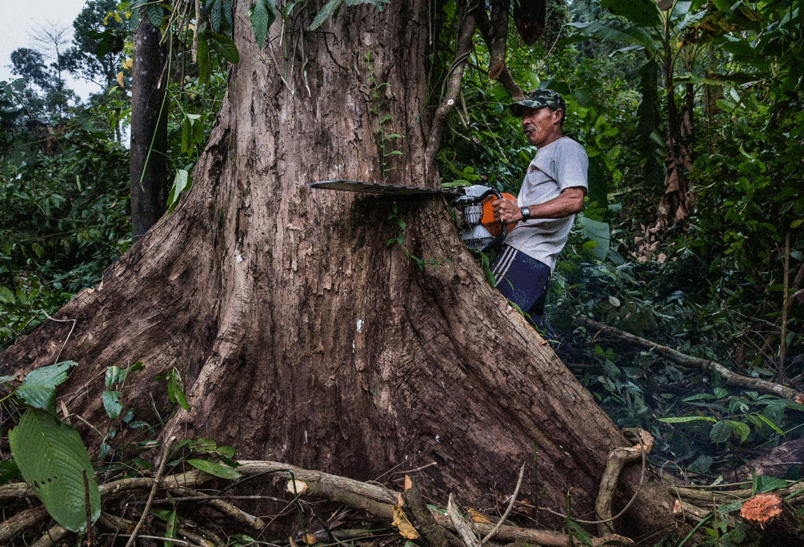

Monsoonal Multiplicities
Never is a plateau separable from the cows that populate it, which are also the clouds in the sky.1
Monsoonal Multiplicities is an exhibition of work arising from a five-year engagement with the monsoon in India, Bangladesh, London and Myanmar by the European Research Council funded project, Monsoon Assemblages. It offers visitors a virtual experience of the monsoon by following stories of entangled beings, energies, infrastructures, life-worlds, matters, technologies and knowledge practices and their mobilisation by colonial and neo-colonial agendas. The stories are organised under five themes – framings, infrastructures, interspecies interlocutors, matters and urban assemblages, that serve as cuts through monsoonal encounters. The website has been designed to enable visitors to navigate rhizomatically through the stories and themes – to scroll down, leap across, return, zoom in, pause, or in other ways interact with their content without ever having to return to a home page. Navigation becomes a way of constructing circulations and cross-cutting relations, providing visitors a virtual experience of the monsoon in all its multiplicity.
In March 2021 Monsoon Assemblages will host a programme of online events, a walking tour and an artists’ residency in London to coincide with the launch of the exhibition. These events will open the work of Monsoon Assemblages to critical debate and invite audiences to think through its implications for spatial, ethnographic and artistic research practice at a time of ecocide, unstable weather patterns, viral toxicity and violent socio-political hegemony.
Monsoonal Multiplicities Opening
Online event: Booking Request
March 04, 13.00-14.00 UTC (08.00-09.00 EST, 18.30-
19.30 IST)
Speakers: Sunil Amrith, Dilip da Cunha
Chair: Lindsay Bremner
Practicing Architecture Otherwise
Online Panel Discussion: Booking Request
March 11, 13.00-15.00 UTC (08.00-10.00 EST, 18.30-
20.30 IST)
Speakers:
Alison Killing, killingarchitects , Alfredo Ramirez, GroundLab, Architects Climate Action Network UK , Jonathan Cane(University of Pretoria), Rufus Maculuve (Kaleidoscopio) and Ben Pollock (4d Island), Sounding the Monsoon
Chair: Lindsay Bremner
East India Company Walking Tour
Online Walking Tour: Booking Request
March 13, 13.00-14.00 UTC (08.00-09.00 EST, 18.30-
20.30 IST)
Tour by: Leila Redpath In this one-hour Virtual Tour, Leila Redpath will give participants a flavour of how the East India Company grew from a modest fleet of spice traders in 1600 to become the most powerful multinational corporation the world has ever known. But what ever happened to it? Why is it so hidden? And what is its legacy on the ground today? The tour will convey both the ingenuity and ruthlessness of the EIC and the ways it shaped our world today.
How is London a Monsoonal City?
Online Openhouse Artists Residency Workshop: Booking Request
March 18, 13.00-15.00 UTC (09.00-11.00 EST, 18.30-
20.30 IST)
Participants:
Feedback Theatre (Nina Feldman, Debora Mina, Mita
Pujara), Hydar Dewachi, Naiza Khan , Sheila Ghelani
Chair: Corinna Dean
Cultures of Climate Change
Online workshop: Booking Request
March 25, 13.00-15.00 UTC (09.00-11.00 EST, 18.30-20.30 IST)
Collaborators:
Bengal Institute of Architecture Landscapes and Settlements, Dhaka, Blue Temple, Yangon, Care Earth Trust, Chennai, Research Initiatives Bangladesh,
Urban Design Collective, Chennai
Chairs: Lindsay Bremner and Beth Cullen
Monsoonal Multiplicities Closure
March 29 13.00-14.00 UTC +1 (08.00-09.00 EST, 17.30-
18.30 IST)
Online event: Booking Request
Speaker: Harry Charrington
Chair: Lindsay Bremner
During March 2021, the Monsoonal Multiplicities virtual exhibition will serve as a residency space for three artists – Feedback Theatre, Naiza Khan, Sheila Ghelani – to apply their research practices to the question ‘How is London a Monsoonal City?’ The process will be documented by the artists themselves and Hydar Dewachi, a filmmaker, and result in four short videos and posts for the Monsoon Assemblages Instagram feed.
We have prepared an illustrated glossary of monsoon related terms, based on definitions drawn from Wikipedia and other sources. The glossary is intended as a reference for visitors as they navigate through the exhibition.
 

A number of organisations in Chennai, Dhaka and Yangon provided invaluable support to Monsoon Assemblages during fieldwork and in organising the Cultures of Climate Change Workshop.
Chennai
Care Earth TrustCare Earth Trust is an organisation based in Chennai, India that strives to provide scientific services in the area of biodiversity by assessing the human impact on the environment and strategising methods to improve it. In the two decades of the organization’s existence, a key focus of its work has been on evidence-based restoration and management of wetlands. The integrity of wetlands is particularly important in Chennai, a city composed of a network of Blue-Green environments, where hydrology plays a crucial role in urban management. In 2009, Care Earth Trust was awarded India’s highest award, the Indira Gandhi Paryavaran Puraskar by the Ministry of Environment, Forests and Climate Change, Government of India for its pioneering work on conserving the Pallikaranai Marsh and Nanmangalam Forests in Chennai and the recovery of Blackbuck in the IIT-M Campus through a species specific restoration plan.
Environmentalist Foundation of IndiaEnvironmentalist Foundation of India (EFI) is a wildlife conservation and habitat restoration group, functioning with active projects in Chennai, Hyderabad, Bangalore, Coimbatore, Pondicherry and Tirunelveli. The group functions with volunteers and focuses on involving many more citizens to join through effective public outreach campaigns. EFI has worked on 130 water bodies, scientifically restoring 107 across 12 states in the country since its inception in 2007. Its lake and pond restoration effort is a nexus in between community volunteering and scientific methods to restore water bodies. Based on site conditions and experience, EFI chooses the appropriate restoration techniques to complete each project. EFI began with regular peripheral clean-ups around water bodies like lakes, ponds, beaches and rivers. It started with a handful of volunteers but today has well over 57,000 volunteers across various cities in India. Every weekend there are dedicated volunteering opportunities to clean up the water bodies in various cities. This movement was further bolstered by scientific collaborations with UNESCO-IHE in the Netherlands (www.un-ihe.org) who provided the know-how of restoration methods used to revive water bodies globally.
Urban Design CollectiveUrban Design Collective (UDC) is a collaborative platform for architects, urban designers and planners to create liveable cities. UDC’s approach is people-centric and aims to bring together many stakeholders involved in the city building process as equal partners to make happy, inclusive and equitable cities. We strive to engage as many people as we can in our projects through immersive methods that allow them to respond to complex urban challenges. Our work is constantly pushing the dimensions of sustainability in our cities and goes beyond an environmental perspective to also include social, cultural and economic attributes. Over the past years, we have been lucky to work on initiatives that are a culmination of our drivers - the ‘Siruseri Watershed Management Plan’ and ‘Big Bazaar Road, Coimbatore’ being two such projects. In the former, we employed creative approaches including exploratory neighbourhood walks, drawing competitions and radio talk shows to empower a local community to provide input and take ownership in restoring their lake. In the latter, we got the community to join us in a tactical urbanism exercise to paint the roads of an arterial road trialling the expansion of the pedestrian way to make the city more walkable for its people.
Vettiver CollectiveThe Vettiver Collective is a Chennai-based anti-corporate group that uses science, arts, law and media and incubates initiatives to extend solidarity to community struggles for social and environmental justice. Since 2002 it has served as a gathering space for city youth to engage in collective action to educate themselves and extend solidarity to community struggles. It has hosted at least three youth initiatives -- We Feel Responsible, Youth for Social Change and Reclaim Our Beaches. The Collective also initiated Justice Rocks, a series of unsponsored concerts and arts collaborations that resulted in ‘Chennai Poromboke Paadal,’ a music video to revalourise the Poromboke Commons and the viral rap song ‘Kodaikanal Won’t’ spotlighting UK multinational Unilever’s mercury pollution in the beautiful hilltown of Kodaikanal, Tamil Nadu. The latest youth-led group to emerge from the Collective is the Chennai Climate Action Group. It describes itself as a city-based youth collective that explores, understands and takes action on the impacts of development on under-represented and unrepresented stakeholders such as future generations, marginalised communities and biodiversity. In January 2020, CCAG facilitated the #LetChennaiBreathe Campaign that saw the launch of a Tamil-English Gaana-rap video titled ‘Kaatha Vara Vidu: Let Chennai Breathe’ featuring kabbadi players from North Chennai highlighting the deteriorating air quality in that working class neighbourhood of Chennai.
Dhaka
Bengal Institute of Architecture Landscapes and SettlementsThe Bengal Institute for Architecture, Landscapes and Settlements (BIALS) is a unique, transdisciplinary forum for the study and design of the environment based in Dhaka, Bangladesh. It presents a platform for developing ideas and programs to improve the qualities of architecture, landscapes and settlements. It does so by generating critical, creative and humanistic dialogues and integrated approaches to the arrangement and rearrangement of the environment. Established in 2015, it has run a variety of innovative, transdisciplinary programs integrating architecture and design research, investigation of cities and settlements and the study of larger regions and landscapes. These currently include an academic program directed by Marina Tabassum and coordinated by Mohammad Tauheed; a research and design program directed by Saif Ul Haque and coordinated by Nusrat Sumaiya, and a publications program. VAS is the official publication of the Institute and Bau Design Limited is its professional affiliate. Kazi Khaleed Ashraf is the Director-General of the Institute.
Buriganga RiverkeeperResearch Initiatives Bangladesh
Research Initiatives, Bangladesh (RIB) is a not-for-profit research organization founded in 2002 by educators, social scientists and human rights activists in Bangladesh to promote knowledge on poverty alleviation that is relevant, useful, innovative, participatory and action-oriented. RIB views poverty as a multidimensional process and recognises that the needs of poverty groups go beyond simple income generation, food and shelter to areas such as equality, dignity, justice, human rights and good governance. RIB supports marginalised and minority groups who are unable to access basic services due to social discrimination and facilitates people’s research (Gonogobeshona) in order to develop and mobilise communities. To date RIB has implemented over 200 action-based research and follow-up development projects among thirty-one marginalized communities, including indigenous, caste-based and culturally discriminated groups. Lobbying work at both local and national levels has been taken up along with and on behalf of the marginalized on various issues such as land, agro-ecology, untouchability and caste, which has been effective in impacting national policy-making.
WorldFishYangon
Blue TempleBlue Temple is an architecture design studio based in Myanmar since 2018. It was started as a reaction to the current global trend where appearance seems to be the main the driver of architecture rather than societal impact. The studio undertakes volunteer-based initiatives, free-of-charge design workshops, and seeks out projects that contribute to social and environmental change. A key aspect of its work has been advocating for the Gyobyu water supply pipeline in Yangon’s Yankin Township as a green urban corridor. The studio uses a combination of computational design tools with low-tech construction techniques inspired by vernacular traditions and is currently experimenting with bamboo as a way of exploring new building typologies and as a possible replacement for concrete and steel. One of its key projects to date has been the imagination-fueled, self-directed Bamboo Playground in Yankin Township. Other projects include prefabricated and modular affordable housing designs and new parametrical mapping for development in Myanmar.
Doh EainDoh Eain is a participatory design practice based in Yangon, Myanmar. In a world of rapid urbanisation, we want to make sure cities are liveable, inclusive and sustainable. Many in Yangon know us for our work transforming back alleyways filled with trash into beautiful Alley Gardens. A current project focuses on Climate Adaptation for Water Security in a Ward in Yangon’s Thaketa township. We worked with the community to identify their water challenges and to generate a vision for their neighbourhood. We provided practical support to the Ward Drainage Committee, making immediate alterations to local drainage, and introduced local government officials to retention and infiltration solutions. We implemented five rainwater harvesting pilots throughout the Ward in households and community spaces. We are monitoring the water use and have chosen ‘Rainwater Champions’ who provide information on the value rainwater harvesting adds to resilience. By empowering local communities and governments we ensure the outcomes of this project are needsbased, practical, and sustainable.
Myanmar DeittaMyanmar is Southeast Asia’s second-largest country and its diverse landscapes hold rich natural resources, from oil and gas reserves to vast gemstone and mineral deposits, rivers with huge hydropower potential and some of the region’s largest intact forests. Many of these resources are located in its rugged periphery, in areas that have long been the stage for brutal ethnic conflict. During decades of repressive military rule, exploitation of resources was largely unregulated and associated with militarisation, human rights abuses and heavy social and environmental impact. Resource revenues were often siphoned off by a corrupt army elite. Since a quasicivilian government took over in 2011 Myanmar has been keen to improve the sector’s image to attract foreign investment. In 2014 it became a candidate country for the Extractive Industries Transparency Initiative (EITI), a voluntary global initiative which obliges governments to publish natural resource revenues. The UNEARTH project began in 2015 as a collaboration between six documentary photographers and the Natural Resource Governance Institute (NRGI) to provide a visual record of Myanmar’s resource sector. The Unearth website is a platform for an expanding collection of stories from independent photographers, filmmakers and writers shedding light on extractive industries in Myanmar.
 Thant MyanmarThant Myanmar works to reduce the use and dependency on single-use plastics in Myanmar by creating awareness of its environmental impact and supporting the use of sustainable alternative materials. It all started with the chance encounter of two of our founding members in March 2018, who soon found themselves in a heated discussion about how their favourite places in Myanmar were disappearing under mountains of plastic. They realized that they wanted to do more than complain and decided to bring together people who shared the same concerns about plastic waste and those who were already working on the topic. Words turned into action and the response was overwhelming: plastic pollution turned out to be an issue that affected everyone and that many wanted to do something about. Soon after, Thant Myanmar was born as a grassroots movement tackling plastic pollution.
Monsoon assemblages
Harshavardhan Bhat
Lindsay Bremner
John Cook
Beth Cullen
Christina Leigh Geros
Anthony Powis
Exhibition design
Jonathan Cane, University of Pretoria
Andrea Hayes, University of Pretoria
Marketing and publicity
Technical support at virtual events
Charlotte Birch
Evelyn Choy
Bobby Jewell
Georgia Trower
Sam Turner
Institution
Funders

School of Architecture and Cities, University of
Westminster
Monsoon Assemblages is a research project funded by the European Research Council (Grant no. 679873). Between 2016-2021 it conducted research into the monsoon in Bangladesh, India, London and Myanmar as an openended gathering of human, non-human and planetary ways of being and knowing.
Website http://monass.org/
Facebook https://www.facebook.com/monassproject/
Twitter https://twitter.com/monass_2016/
Instagram https://www.instagram.com/monass_2016/
1G, Deleuze and F. Guattari, A Thousand Plateaus: Capitalism and Schizophrenia, trans. B. Massumi, London, Continuum, 1987, p. 23.